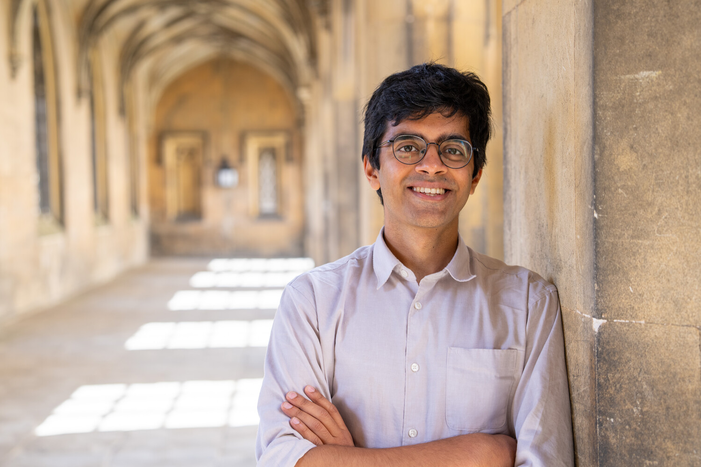
Ayush Tewari
at2164@cam.ac.uk
Assistant Professor, Department of Engineering
University of Cambridge
Fellow, St John's College
Group / Publications / CV
I work on visual perception and world modelling, studying how to turn observations into representations that support reconstruction, editing, reasoning, and planning. I was previously a postdoc at MIT CSAIL and completed my Ph.D. at the Max Planck Institute for Informatics.
PhD Students
Publications
S2PD: Serial-to-Parallel Diffusion for Physically and Logically Consistent Video Generation
arXiv 2026
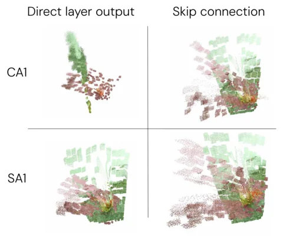
Understanding Multi-view Transformers
NeurIPS 2026
UGG: Unified Generative Geometry Model
NeurIPS 2026
3D-Belief: Embodied Belief Inference via Generative 3D World Modeling
arXiv 2026
VDAWorld: World Modelling via VLM-Directed Abstraction and Simulation
SIGGRAPH Asia 2026
ViPS: Video-informed Pose Spaces for Auto-Rigged Meshes
SIGGRAPH Asia (ACM Transactions on Graphics) 2026
Faster 3D Gaussian Splatting Convergence via Structure-Aware Densification
SIGGRAPH 2026
Efficient Camera-Controlled Video Generation of Static Scenes via Sparse Diffusion and 3D Rendering
arXiv 2026
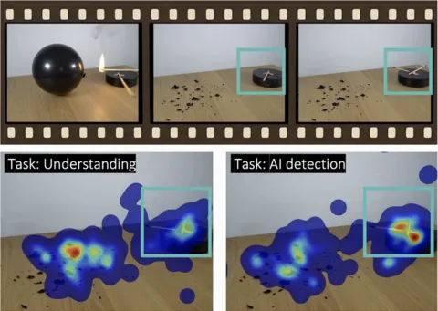
Perceived authenticity drives gaze behavior when watching AI-generated videos of physical scenes
Scientific Reports 2026
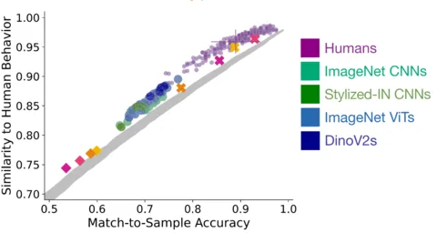
FlowMap: High-Quality Camera Poses, Intrinsics, and Depth via Gradient Descent
3DV 2025
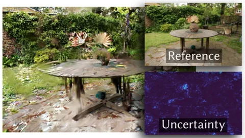
Manifold Sampling for Differentiable Uncertainty in Radiance Fields
SIGGRAPH Asia 2024
PickScan: Object discovery and reconstruction from handheld interactions
IROS 2024
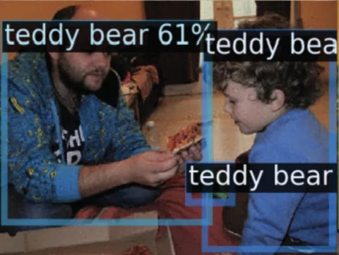
Diffusion with Forward Models: Solving Stochastic Inverse Problems Without Direct Supervision
NeurIPS 2023 (Spotlight)
FlowCam: Training Generalizable 3D Radiance Fields without Camera Poses via Pixel-Aligned Scene Flow
NeurIPS 2023
Diffusion Posterior Illumination for Ambiguity-aware Inverse Rendering
SIGGRAPH Asia 2023
AvatarStudio: Text-driven Editing of 3D Dynamic Human Head Avatars
SIGGRAPH Asia 2023
ModalNeRF: Neural Modal Analysis and Synthesis for Free-Viewpoint Navigation in Dynamically Vibrating Scenes
EGSR, Computer Graphics Forum 2023
Drag Your GAN: Interactive Point-based Manipulation on the Generative Image Manifold
SIGGRAPH 2023
Learning to Render Novel Views from Wide-Baseline Stereo Pairs
CVPR 2023
Neural Groundplans: Persistent Neural Scene Representations from a Single Image
ICLR 2023
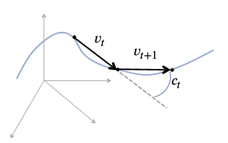
Neural Radiance Transfer Fields for Relightable Novel-view Synthesis with Global Illumination
ECCV 2022 (Oral Presentation)
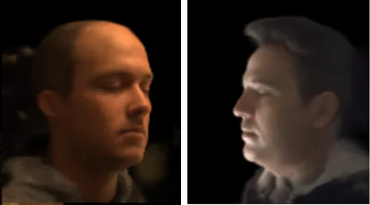
VoRF: Volumetric Relightable Faces
BMVC 2022 (Oral Presentation, Best Paper Honorable Mention)
Disentangled3D: Learning a 3D Generative Model with Disentangled Geometry and Appearance from Monocular Images
CVPR 2022
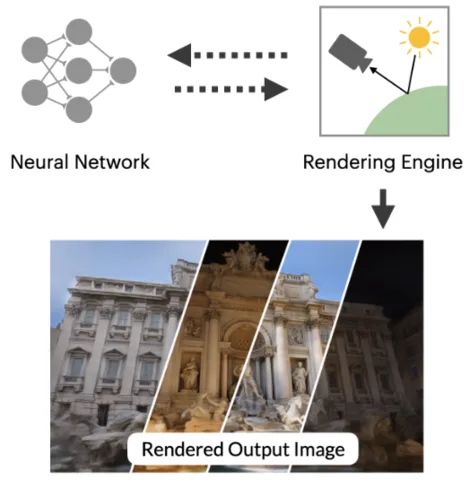
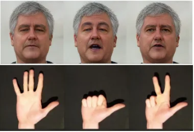
StyleVideoGAN: A Temporal Generative Model using a Pretrained StyleGAN
BMVC 2021 (Oral Presentation)
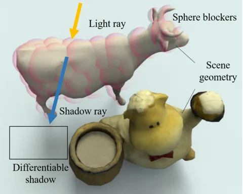
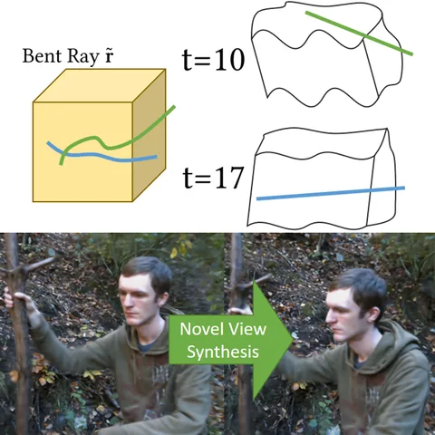
Non-Rigid Neural Radiance Fields: Reconstruction and Novel View Synthesis of a Deforming Scene from Monocular Video
ICCV 2021
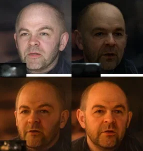
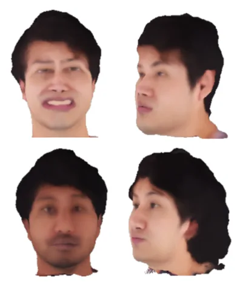
i3DMM: Deep Implicit 3D Morphable Model of Human Heads
CVPR 2021 (Oral Presentation)
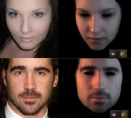
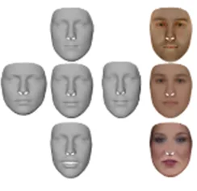
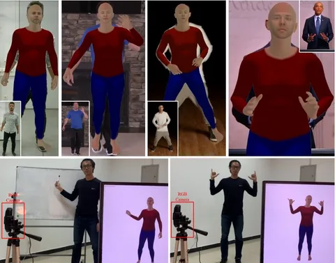
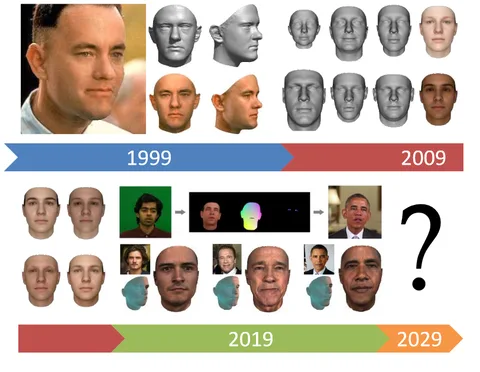
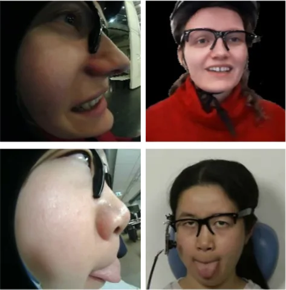
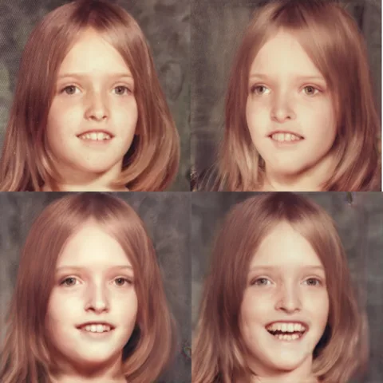
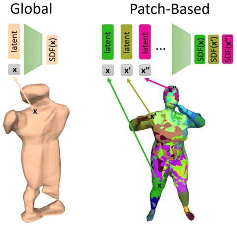
PatchNets: Patch-Based Generalizable Deep Implicit 3D Shape Representations
ECCV 2020
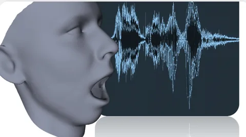
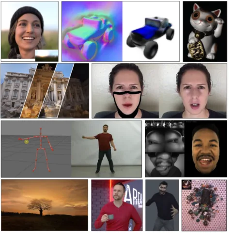
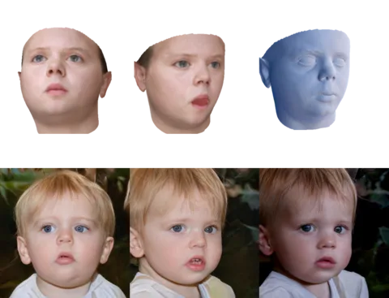
StyleRig: Rigging StyleGAN for 3D Control over Portrait Images
CVPR 2020 (Oral Presentation)
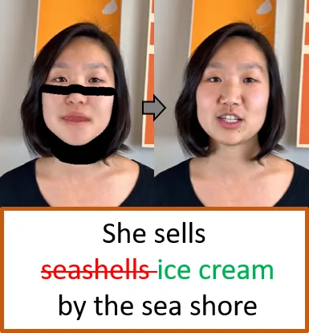
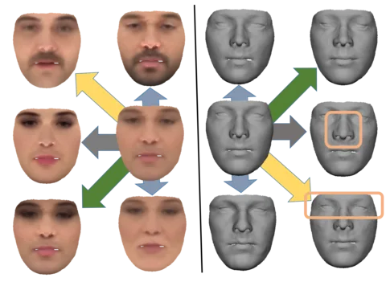
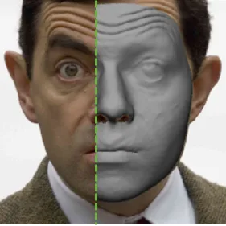
High-Fidelity Monocular Face Reconstruction based on an Unsupervised Model-based Face Autoencoder
TPAMI 2018, special issue on The Best of ICCV 2017
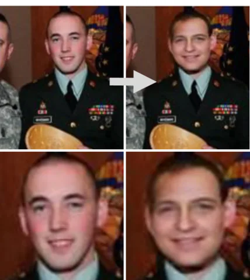
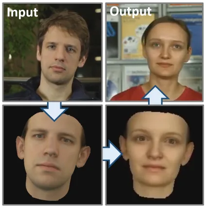
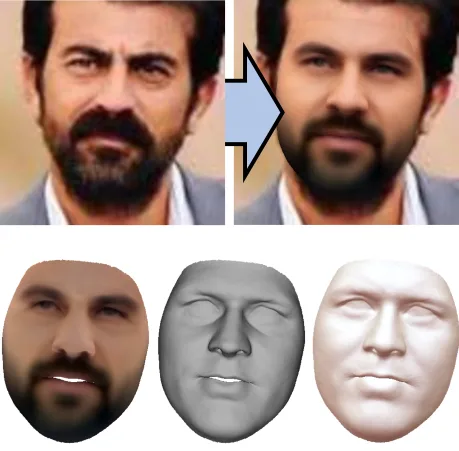
Self-supervised Multi-level Face Model Learning for Monocular Reconstruction at over 250 Hz
CVPR 2018 (Oral Presentation)
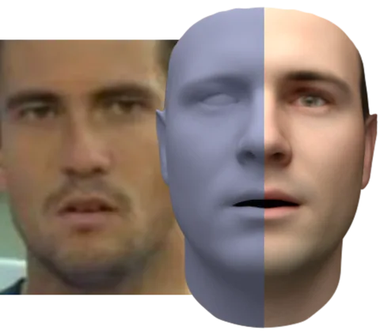
InverseFaceNet: Deep Single-Shot Inverse Face Rendering From A Single Image
CVPR 2018
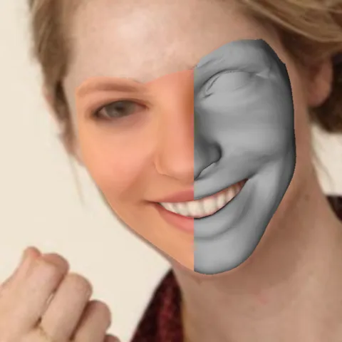
MoFA: Model-based Deep Convolutional Face Autoencoder for Unsupervised Monocular Reconstruction
ICCV 2017 (Oral Presentation)